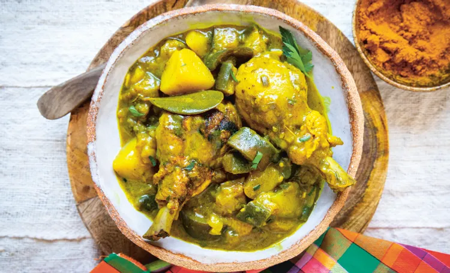

Pris en maille
QUIZZ
a.Saint-François b.Dans ma salle de bain c.Dehais d.Morne à l'eau
a.Capesterre b.heuuuu... c.Les Abymes d.Gourbyere
Où est-ce ?
a.Abymes b.Petit-Bourg c.Gourbyere d.Dehais
a.Saint Louis b.Saint Martin c.Saint Laurent d.Saint Joseph

a.Poulet au curry b.Colombo c.Bébélé d.Trip et ti fig
a.Marie-Galante b.Désirade c.Sainte Lucie d.L'ilet Caret
a.L'amour b.Fécule de maÏs c.Eau d.Farine
a.Louise Maurine et Célia b.Anaïs Emilie et Naïma c.Baptiste Amandine et Léa d.Julien Mathis et Thomas
Retour à la page principale
Dans ton filet
Repas d'aventure